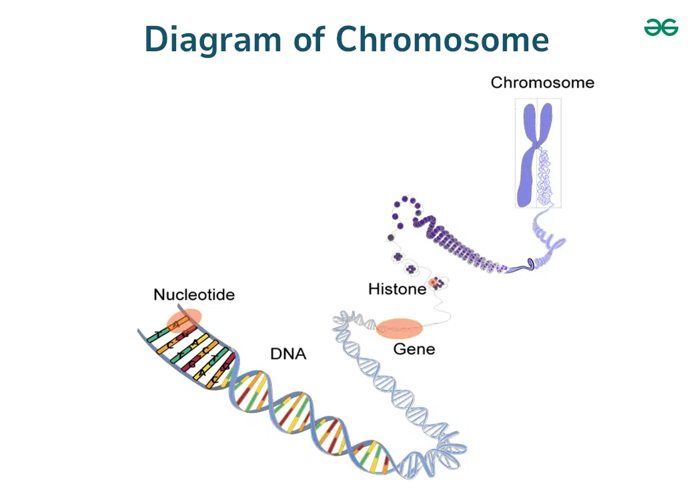

Introduction
Cell division is an essential biological process that occupies a central role in a cell’s life. From its birth to its eventual death, it enables the formation of two new cells that may or may not be genetically identical to their original mother cell. At the multicellular level, cell division allows organisms to grow, repair tissue, and reproduce.
Chromosomes
DNA carries all the instructions that make an organism function, but it needs organization. Histones act as spools around which DNA winds, forming nucleosomes. These coil into chromatin, which further condenses into chromosomes.
Interphase
Before mitosis, a cell spends most of its time in interphase, where it grows, replicates DNA, and prepares to divide.

Mitosis
Mitosis divides one cell into two identical ones. It consists of several distinct stages.
Prophase
The nuclear envelope breaks down, and condensed chromosomes—each with two sister chromatids—attach to spindle fibers via their kinetochores.

Metaphase
Chromosomes align along the equatorial plate at the cell’s midline.

Anaphase
Sister chromatids separate and move toward opposite poles, ensuring each new nucleus receives a complete chromosome set.

Telophase
Chromosomes de-condense back into chromatin. New nuclear envelopes form, marking the end of mitosis and leading into cytokinesis.

Meiosis
Meiosis produces gametes with half the original chromosome number, introducing genetic diversity essential for sexual reproduction.
Comparison
| Feature | Mitosis | Meiosis |
|---|---|---|
| Purpose | Growth, repair, maintenance | Gamete production |
| Number of Divisions | One | Two |
| Chromosome Number | 2n → 2n | 2n → n |
| Genetic Variation | None | High (crossing over) |
Conclusion
Mitosis ensures growth and repair, while meiosis fuels evolution through genetic variety. Together, they sustain and diversify life.